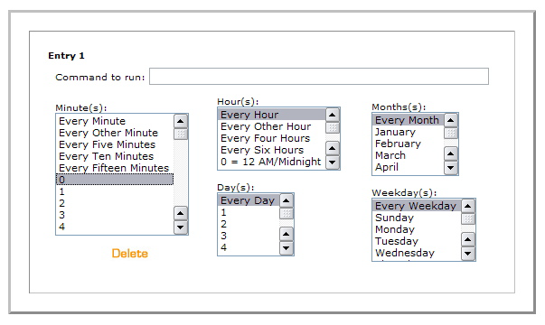

To set up scheduled posting in this version, you need to be able to set up a ``cron'' job on the server. There are at least two ways to do this: using shell access, or through cPanel. Some hosting providers will allow one and not the other.
Once you've set up post scheduling, when you save an entry with a post status of ``Future'', it will be automatically picked up and published by the script when it runs.
Note that you need to use the field labeled ``Authored On'' on the Edit Entry screen to specify the time when the entry should go live.
If you have shell access to your server:
If you have shell access, you can set up scheduled posting as follows:
% crontab -e
0,15,30,45 * * * * cd <path to mt>; ./tools/run-periodic-tasks
This instructs the cron monkey to run the script at zero, fifteen, thirty, and forty-five minutes after the hour, every hour. The asterisks are a way of telling cron to do this every hour, every day, every day of the week and month. Make sure you have exactly four asterisks separated by spaces.
<path to mt> should be the path to your Movable Type
application directory.
After that, just save the file, exiting your editor, and cron will report that it installed a new crontab.
If you have cPanel:
To set up scheduled posting through cPanel, follow the directions below:

In the box labeled ``Command to run,'' enter the path to your Movable Type
installation, followed by /tools/run-periodic-tasks:
cd <path to mt>; ./tools/run-periodic-tasks
The timing options can be set to a schedule that suits you, however, it is not wise to run the script more often than about once every fifteen minutes, since it could bog down your server. We recommend the settings ``Every fifteen minutes,'' ``Every Hour,'' ``Every Day,'' ``Every Month,'' and ``Every Weekday.''